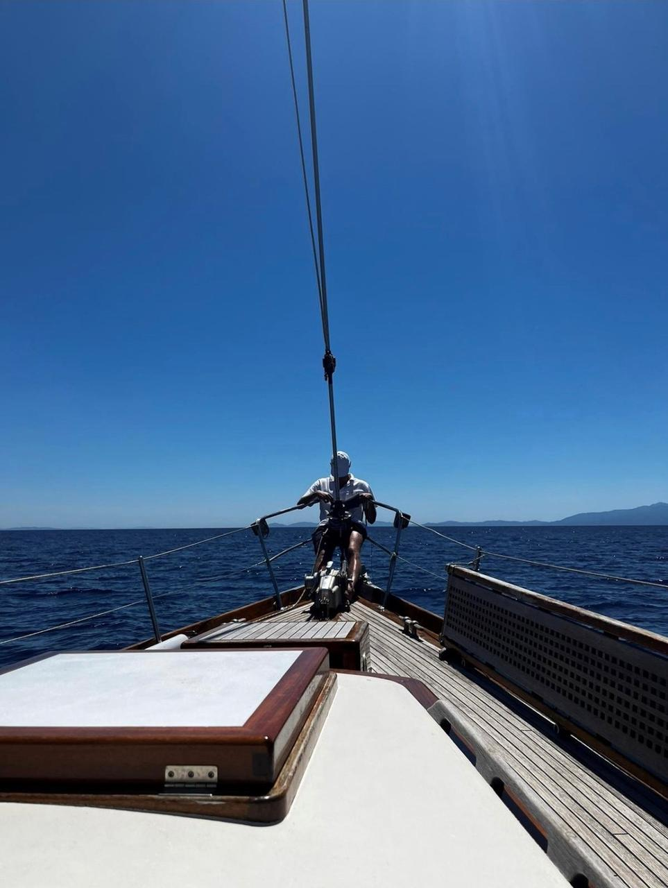
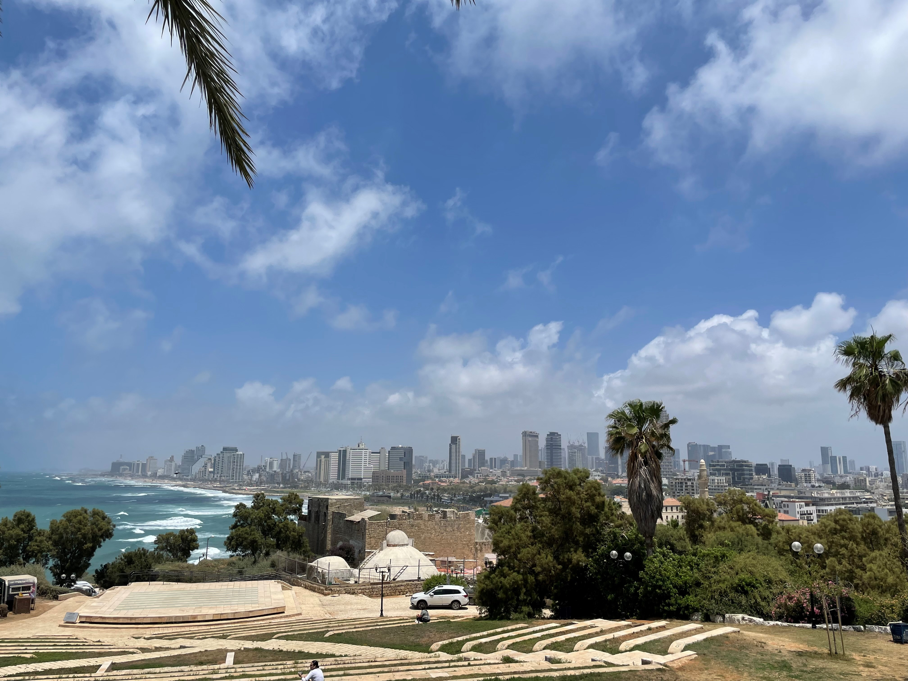

Photo Blog
Tired of reading my work related stuff? Wanna get to know me better? This page is for you. After all we human come as a package, you don't get just the work related skills you also get the character of the person.
Mine has a couple of tons of limitations that I constantly work on, some traits that some will appreciate and some will question and some traits that are working under cover and are not known to me in person - looking forward to get to know them.
So here my Photo Blog. Let me open up a little bit; not too much! For this we have to become friends. One Photo per month such that it will hold its value and will stay there as an album in time.
2022
June
Nice sailing on the Ella. It is becoming a tradition. Always a nice way to switch off.

May
Back to the land of milk and honey.
Very nice. Met that character on the plane… was quite funny.
Thorough experience, spent some time with some young people from the italian community that did aliyah, met some IDF unit 8200 people and spent one evening with a young Canadian that decided to interrupt his PhD in physics in order to turn into an orthodox. He was studying in a yeshiva and shared a bit of the experience and his rational for going for the shidduch system. Very interesting.
As it got me fascinated I started to listen a bit of parashot interpretations each week. Very nice. Lots of food for thought. Two of the one I especially liked: one, two.
In any case was also nice to see how the morphology of Tel-Aviv changed. A bit of new few things. I was pleased to see that the land is healthy and is still rapidly changing and technically growing.
I pledge not to wait 3 years before going back. Let's aim for at least 1 time a year.

April
First half-marathon. Zurich Marathon 10/04/2022 - 01:39:09.

March
Some small kitchen experiment. It is nice to seriously cook.
Once I will have more time with less to do during my weekends will take some time to do proper stuff.

February
WE in London. The weekend the world changed. As always loved the city.

January
Grenada - sailing and enjoying the nice places that the world offered us.

2021
December
An Ant in NYC

November
Back to Munich for a weekend of weizenbier and schnitzel.

October
My first flat on my own - hard work pays off. Have to make it beautiful now.
It's a matter of style and always recall the good old Churchill: "We shape our buildings; thereafter they shape us".

September
A new beginning. More mature. Let's hope for the good and let's hope to be under a good star.

August
My Italian summer. Was good to see long-lasting friends. They cheered me up and helped me to get the energies for the next reboot.
I was thinking that it is a dozen years by now that we meet at the sea. Nice to see that friendship is just augmenting year after year despite the fact that we see us so little during the year.

July
Thank you for everything. It has been a wonderful time. I learned a lot from you and you made me a better man.

June
Sailing practice. 3 days on the sea. First regatta. First night sailing. Beautiful stars. Beautiful atmosphere. And wow.. these dolphins.

May
My sailing victory. Finally. The boring part is now over. Go and collect these miles and then - O Captain, my Captain!

April
Frankfurt. Hopefully one of the last times under this circumstance.

March
On the slopes. Was weird with mask.

February
Back into business - this time I will finish it. 2022 at sea!

January
My first home made pasta! What a fatigue! You have to put your soul into it when working the pasta. Tough sport!

2020
December
A standard December in ZH.

November
We have a lawyer in the Family! Congratulations!

October
Some more not enjoyable weekend in Frankfurt. Let's hope this time will soon pass.

September
Back to ZH. Was a fun September. Some good evenings with friends and the beautiful Tutanchamun.

August
Some grill nights at the sea.

July
My Tuscany break. What a beautiful landscape. Possibly one of the best car-tours you can do.

June
Still ok and improvement. Pandemic starts to slow down. First trials of freedom in Milan Hinterland.

May
It seems that G*d decided to sit on our side of the table. May it continue as that. In the meanwhile pandemic is still going on. Tough period.

April
Bad times are continuing. Plus a global pandemic started. Have to improvise.

March
And here the shock arrived. What a hit. You discover yourself when life hits you that hard.

February
Florence - II. Always with family but another branch.

January
Munich new year. With a very dear friend of mine.

2019
December
Verona. It's really the city of love. Very romantic. Beautiful day.

November
Frankfurt times are looming.

October
Second graduation.

September
New beginning. ZH part II. Have slowly to make order of my working life and start it very seriously. Decided to eventually go with IT.
Let's build that castle.

August
Still in London experiencing "The City".

July
London times. You recall the bagel's. And all of the markets places. Love that city. Would eventually live there for some longer period at some point.

June
Rome break. What a beautiful city. Beautiful and authentic. And the people there. Just outstanding. I don't think I can ever live here but the to visit it is always an outstanding place.

May
Slovakia. First time. Was happy to meet the family.

April
Back to ZH. Seeing old friends.

March
Florence with family. Some special day to celebrate.

February
That flat was fun. I loved it; it really had its charm. Some person that was there with me some time had a different opinion but I have good memories of it… and of the souppine I had to eat every second day ahah.

January
Leaving IL. Such a beautiful months. Let's hope to see you soon again.

2018
December
IL skies. Deep into my heart.

November
Hahaha funny University campus. I like the mindset of Israeli. Big difference in comparison to CH. At the library it was always cat invasion.

October
Back in IL. Enjoying the time, the culture and the food.

September
Another quick break in Italy. Another break at Sacro Monte.

August
Exploring the country. By now it's the 6th time in Jerusalem. I can go around the old-city with no map.

July
Still, here. Enjoying TLV and my US friends. I love US people. Very different mindset in comparison to EU people.

June
And suddenly you are in the land of milk and honey. I don't know why and how it exactly happened but I feel emotionally attached to this land. Kan zeh bayit, Kan zeh lev.

May
Praha. Same friends. It's becoming a pattern. Beautiful city. One of the best in EU I would say.

April
April. The first romantic birthday. Something beautiful has started.

March
Back to reality and Switzerland. Some sking trips and meeting new nice people.

February
Too many experiences this month. It's the beauty of traveling. Let's put an anonymous picture. Seem like relaxing but it was not most of the time. Beautiful times and plenty of memories.

January
What to say. Vietnam vo dich?!

2017
December
First Graduation. The end of a cyclus and a new that started well.

November
London. It's London. Commodity course with "il fesso". Hahah fun time. And what a great city.

October
Madrid. Ahhh what a great city. I loved it. We were a very nice group of friends and I really enjoyed that travel. Best atmosphere.

September
Santis. And a new beginning with many nice people.

August
Barcelona. Was a particular experience and very nice city.

July
A break home. The sacro monte. The place my mum loves and the one that makes her feel home. I wonder what such place will be for me in a couple of years.

June
Berlin.. du weisst ich liebe dich.
Just kidding not my kind of city. But I always enjoyed the time there with friends.

May
Hong Kong. Was fun to see that world. Go around the city by my own and be at the exhibition.